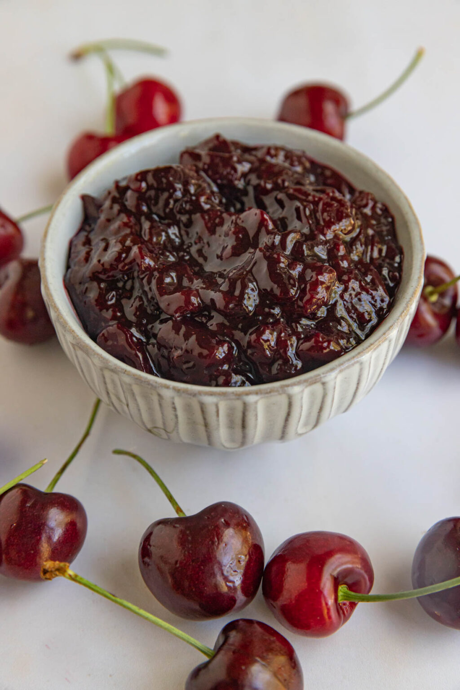

Home
Cherry Compote

Description
This easy to make compote makes a great accompaniement to vanilla ice cream. How can something so simple feel so luxurious!?
The additional spices can be adapted to personal taste. Personally, I love the way the star anise compliments the cherry flavour.
Ingredients
- Cherries
- A sweetener of choice (brown sugar or honey work well)
- Star anise
- Cinnamon
Steps
- Prep the cherries: Using a knife, pit the cherries by making an incision lengthways on each fruit. I recommend doing this over the saucepan we'll use to cook the fruit so as to catch all the delicious juice and save on mess.
- Add the other ingredients:This is a matter of taste. I add a little sugar or honey, 2-3 whole star anise and a small stick of cinnamon.
- Cook down: On a low-med heat, cook down the cherries, stirring occasionally as the fruit breaks down and takes on the flavours of the spices.
- Serve: Remove the whole spices and either serve immediately with vanilla ice cream or wait for it to cool and use a syou wish.